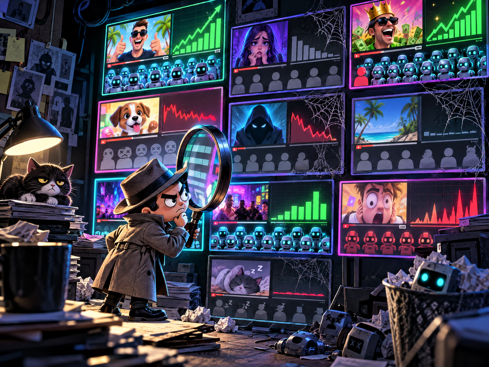
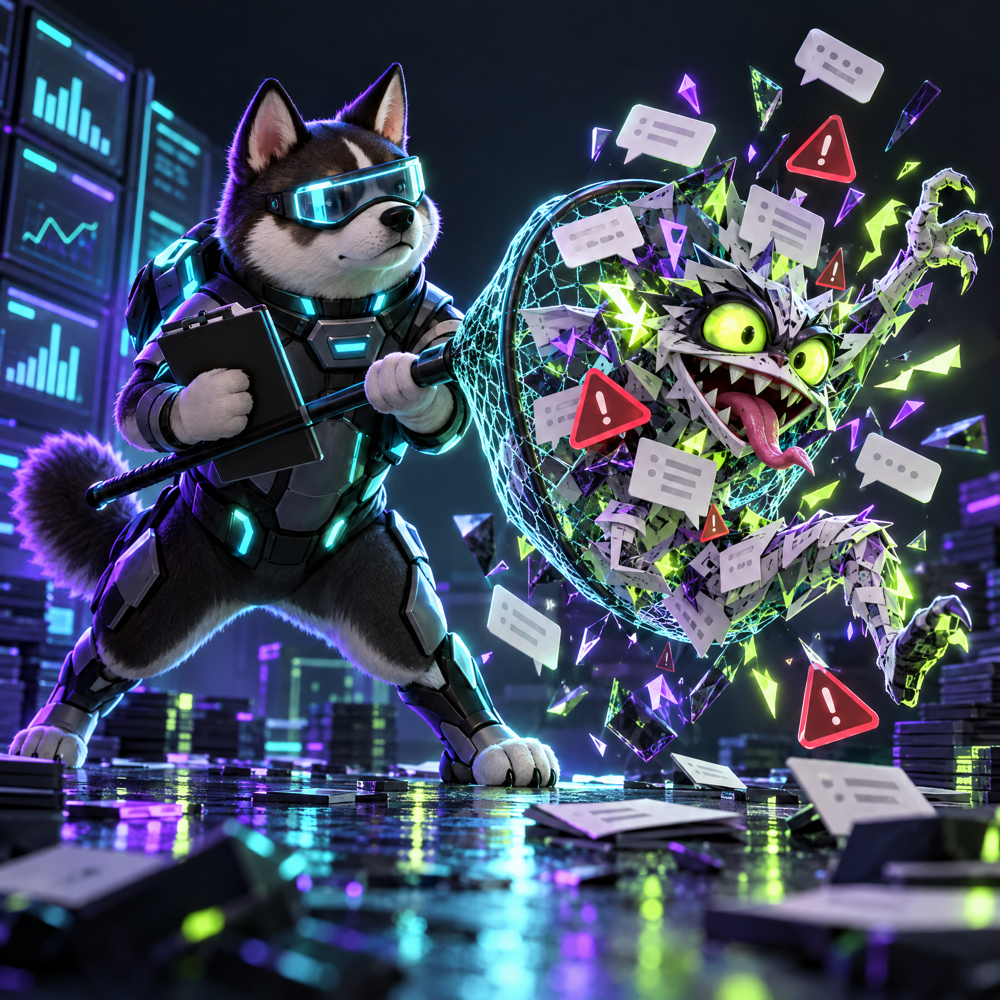

Channel Chaos / wide banner
For hero sections, campaign headers, and the moment your dashboard gets more dramatic than the comments.
Request a campaign page ↗A growing library of detailed, darkly funny campaign visuals for the creator who wants analytics with a pulse. Every card is a local asset, not a hotlink.
For hero sections, campaign headers, and the moment your dashboard gets more dramatic than the comments.
Request a campaign page ↗
For myth-busting analytics posts and honest-count announcements.
Pair with a plan →
For comment-control messaging, community safety, and the occasional gremlin.
Ask about moderation →For creator education, launch graphics, and cooking up a better report card.
See support options →